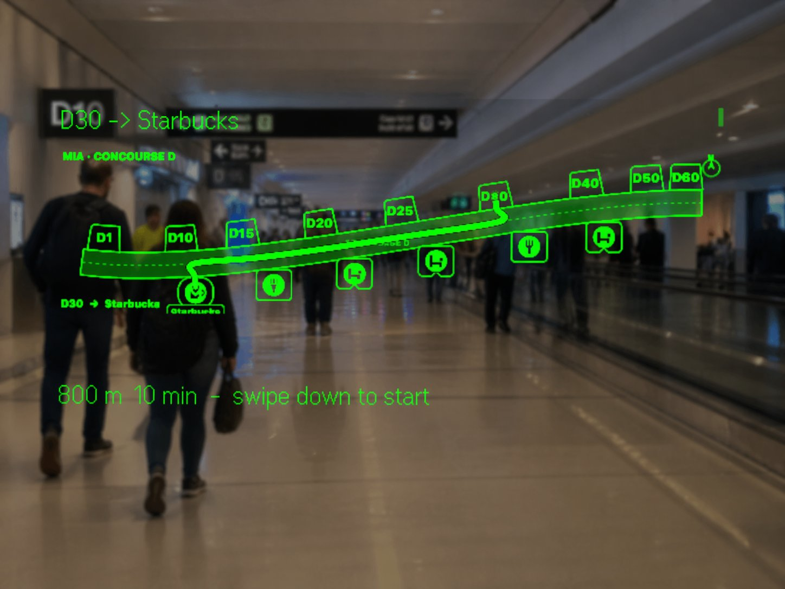
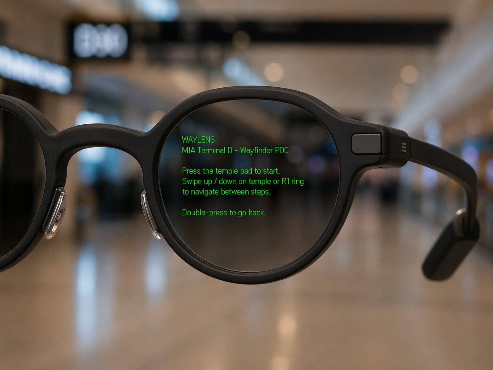
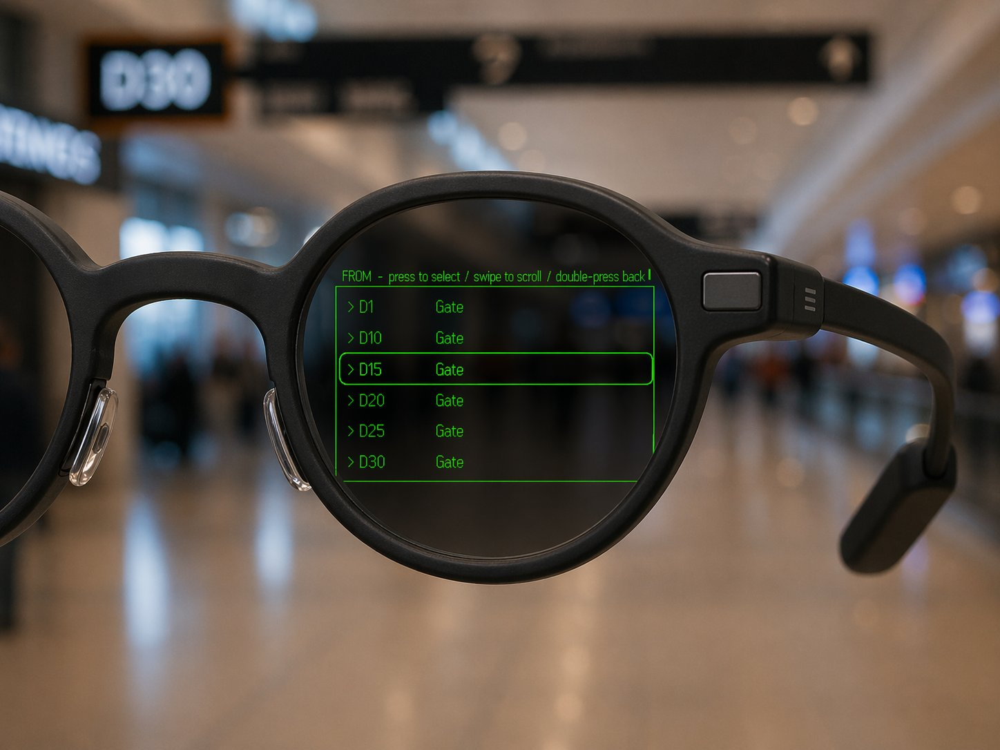
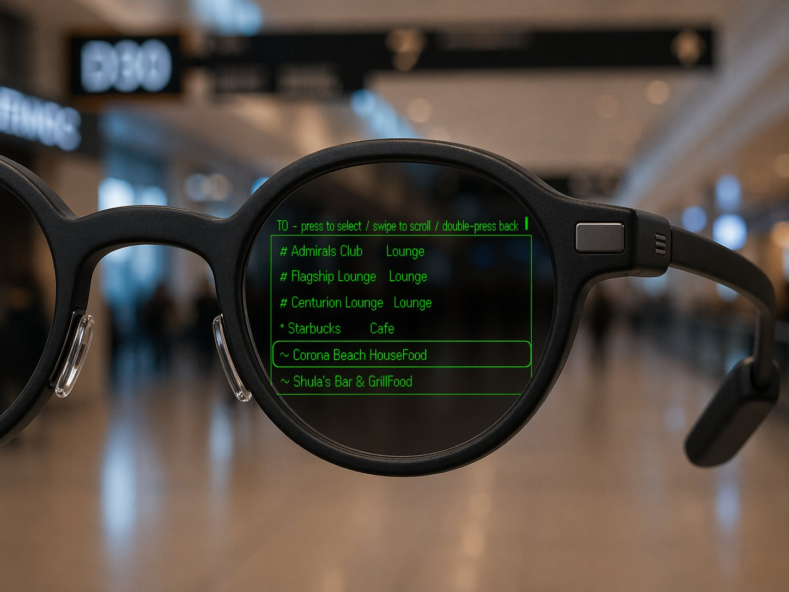
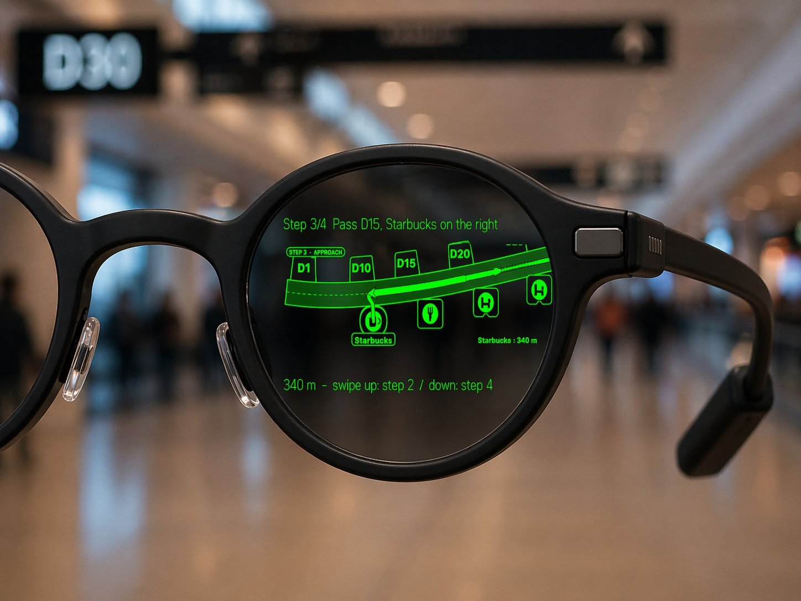

Indoor navigation reimagined for smart glasses.
A speculative extension of Acuity Wayfinder onto Even Realities G2 optics.
Smart glasses give us a surface we have never had before in wayfinding: a persistent, glanceable, hands-free overlay that lives exactly where the traveler is already looking.
HEADS UP · HANDS FREE · AMBIENT
A Wayfinder-inspired indoor navigation experience running natively on Even Realities G2 glasses. Built this sprint as an Even Hub plugin.
FROM and TO pickers driven by the temple touchpad and optional R1 ring. No phone required.
Hand-composed terminal scenes with POIs, route overlay, and turn-by-turn progression.
Packaged as an .ehpk plugin. Ships to the simulator and to the glasses themselves.


Clean brief, hands on the stem.

Swipe to scroll gates and POIs.

Lounges, cafes, gates. Tap to lock.
D30 → Starbucks. 800 m, 10 min.

Swipe through turns. Arrive.
The G2 is not a tiny phone. It renders 4-bit greyscale image buffers pushed over BLE to a fixed canvas. Every pixel has to earn its place.
The plugin shell
Pixels to the glasses
Hands stay off the phone
Gate to gate
Lounge finder
Patient & visitor
routing
Resort, casino,
cruise ship
Booth & session
navigation
Corporate,
university, civic